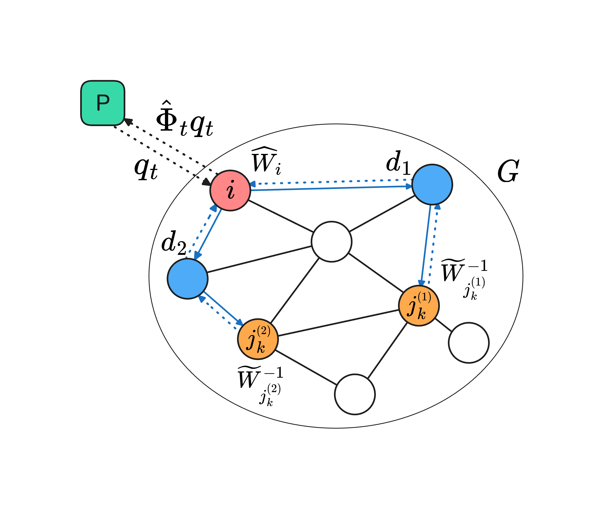
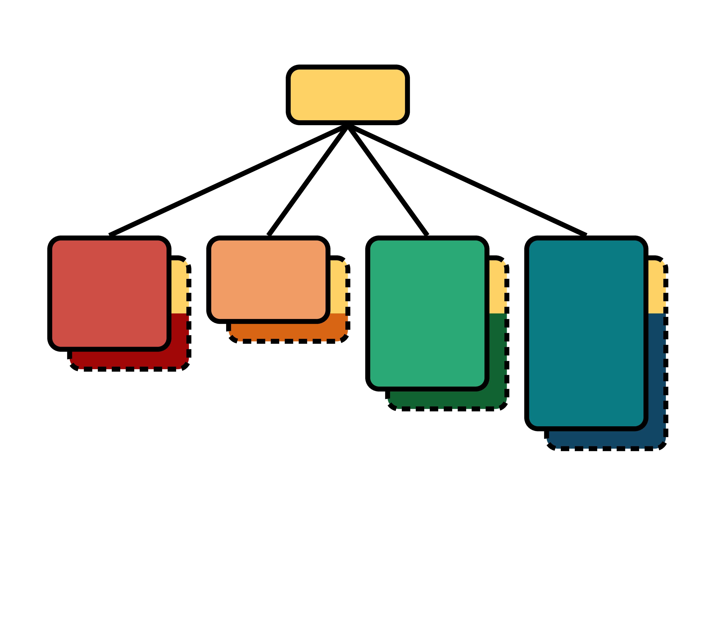
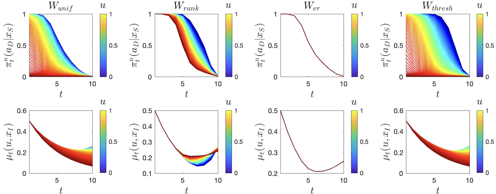
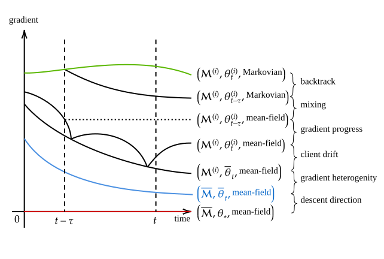
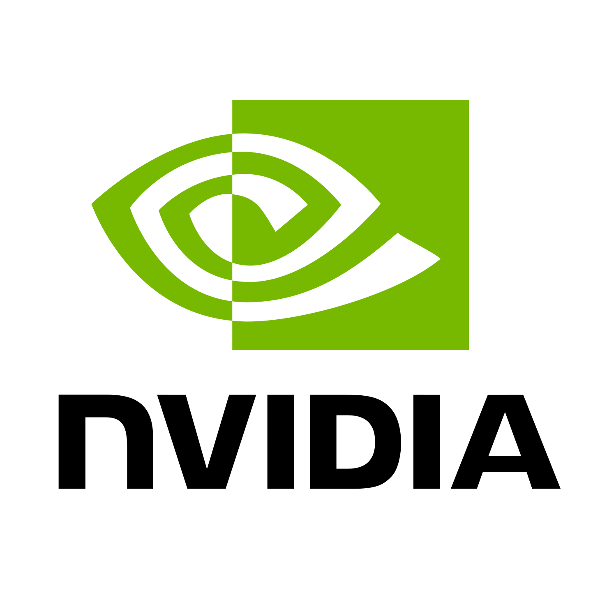

PhD student (2024-present)
MIT
77 Massachusetts Ave, Cambridge, MA 02139
2026-11-11 Invited to speak at the 2026 INFORMS Annual Meeting in session
Information Design, Trust, and Incentives.
2026-02-23 Invited to give a talk at the Learning from
Heterogeneous Sources workshop at the Simons Institute for the Theory of Computing.
2026-01-26 Our paper enabling collaboration between arbitrarily heterogeneous agents for
fully personalized solutions with adaptive affinity-based speedup is accepted to ICLR 2026.
2025-11-05 Invited to present at the inaugural Jump Trading's AI Research
Symposium.
2025-04-25 Our paper unifying iteration and operation complexity
analysis of Riemannian trust region and general-order adaptive regularization methods (and more!) is
published in COAP.
2025-01-22 Our paper proposing learning mean field games with a simple SGD and
population-aware function approximation is accepted to ICLR 2025.
2024-05-01 Our paper developing a
new formulation and a learning method for discontinuous graphon games is accepted to ICML 2024.
2024-04-15
My PhD application journey has concluded. A heartfelt thank you to everyone who supported me!
I am excited to join MIT LIDS & IDSS in Fall 2024.
2024-01-16 Our paper on federated
reinforcement learning with heterogeneous agents is accepted to ICLR 2024.
I study multi-agent decision-making through the lens of learning, statistics, optimization, control, games, and networks.
My long-term research goal is to combine efficient optimization methods and tailored machine learning frameworks with strong theoretical guarantees to address societal challenges.
View some dimensions of my current research.

Network Intervention by Polling
Strategic Agents
Preprint, 2026.

Personalized Collaborative Learning
with Affinity-Based Variance Reduction
ICLR, 2026.

Riemannian Adaptive
Regularized Newton Methods with
Hölder Continuous Hessians
Computational Optimization and Applications, 2025.
Stochastic Semi-Gradient Descent for
Learning Mean Field Games with Population-Aware Function Approximation
ICLR, 2025.

Riemannian Trust
Region Methods for SC1
Minimization
Journal of Scientific Computing, 2024.

Graphon Mean Field Games with a Representative
Player: Analysis and Learning Algorithm
ICML, 2024.

Finite-Time Analysis of On-Policy
Heterogeneous Federated Reinforcement Learning
ICLR, 2024.
A Single Online Agent Can Efficiently Learn
Mean Field Games
ECAI, 2024.

Pandoc Filters
Useful pandoc filters for an academic workflow


Obsidian Terminal
Theme
An Obsidian theme that emulates a terminal


Review vs Stream
A research report on music reviews and streams

Salt Library
A multi-functional, interactive library system


Wox Theme Library
A theme library for Wox launcher

Published version of my personal knowledge base; curated for learning in public.
